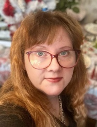

«Жизнь – удовольствие»
Слова имеют смысл, когда они звучат, когда есть возможность быть услышанными.
Наш проект «Жизнь – удовольствие» ориентирован на лиц с ограниченными возможностями здоровья и призван содействовать их трудоустройству.
В рамках проекта его участники проходят полную психодиагностику и профориентацию, после чего рекомендуются работодателям.
Все услуги для участников проекта в его рамках бесплатны.
Ваша жизнь стоит того, чтобы быть рассказанной, сколько бы лет вам ни было.
Руководитель проекта
Руководителем проекта является практикующий психолог-психоаналитик Герасимова Елена Александровна.
Елена Александровна в 2021 году закончила Восточно-Европейский Институт Психоанализа по специальности "Психолог-консультант". Повышение квалификации как семейный психолог (2022 г.) и психолог-психоаналитик (2024 г.) проходила там же, как кризисный психолог – в Национальной Академии Дополнительного Профессионального Образования (2023 г.).
За время профессиональной деятельности c 2021 года проведено более 500 консультаций.
Консультация
Как участник проекта, так и любой другой желающий на платной основе могут получить индивидуальную консультацию. В рамках семейного и кризисного консультирования применяется краткосрочный полимодальный подход; в рамках психоанализа и психоаналитической немедицинской терапии – долгосрочный, ориентированный на поиск причины подход.
Консультирование ведётся как очно, так и онлайн.
Контакты
Уточнить условия участия в проекте и записаться на консультацию можно через WhatsApp или Telegram